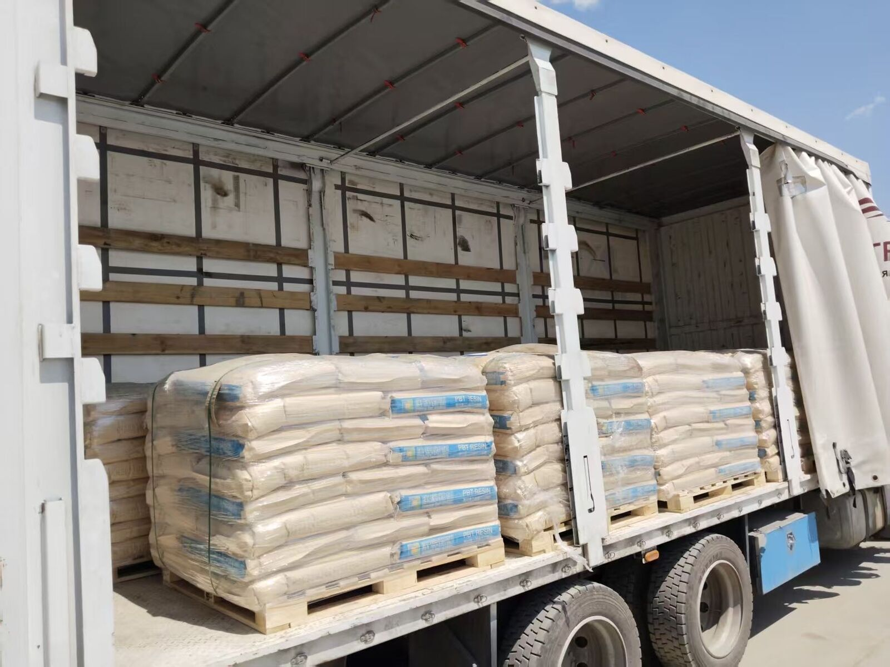

مواد شیمیایی
حمل مواد شیمیایی و رزین از چین به ایران: الزامات MSDS شانزدهبخشی
استعلام مواد شیمیایی با پروندهٔ محصول آغاز میشود، نه فقط وزن و حجم. پیش از ارسال، MSDS کامل شانزدهبخشی همان محصول را بفرستید تا طبقهبندی حمل، بستهبندی و سازگاری بار بررسی شود.
- در نخستین استعلام، MSDS کامل، معتبر و شانزدهبخشی همان محصول را پیوست کنید
- شمارهٔ UN، کلاس خطر و گروه بستهبندی بخش ۱۴ را اعلام کنید؛ اگر مشمول مقررات حمل نیست، همان بخش باید این موضوع را بنویسد
- نوع و تعداد بسته، وزن خالص و ناخالص، ابعاد، کد HS و عکس روشن بستهها را بفرستید
- پذیرش و امکان بار تجمیعی پس از بررسی اسناد و سازگاری، برای هر محموله جداگانه تأیید میشود
- تحویل CPT / DAP به گمرک تهران یا مشهد است؛ کارگزار گیرنده ترخیص ایران را انجام میدهد
پروندهٔ نخستین استعلام
انبار مبدأ، گمرک مقصد، کد HS، وزن ناخالص و CBM را بفرستید. برای مواد شیمیایی، MSDS صادرشده از سوی سازنده، نام و گرید محصول، نوع و تعداد بسته، وزن خالص و ناخالص، و عکس بستههای بستهشده و برچسبها نیز لازم است. فاکتور، پکینگلیست، MSDS و علائم بسته باید یک محصول را نشان دهند. عنوان کلی «رزین»، «افزودنی» یا «ماده اولیه» کافی نیست.
شانزده بخش MSDS چه چیزی را مشخص میکند
بخشهای ۲، ۹، ۱۰ و ۱۴ برای بررسی حمل مهماند: خطرات، خواص فیزیکی، پایداری و طبقهبندی حمل. در صورت کاربرد، بخش ۱۴ باید شمارهٔ UN، نام صحیح حمل، کلاس خطر و گروه بستهبندی را بنویسد. خلاصهٔ بریدهشده یا SDS محصولی دیگر جای پروندهٔ کامل را نمیگیرد. نسخه، سازنده و گرید باید با کالای واقعی یکسان باشد.
بستهبندی و بررسی بار تجمیعی
بشکه، کیسه، IBC و کارتن پالتشده باید بسته، سالم، برچسبدار و مناسب مادهٔ اظهارشده باشد. امکان رویهمچینی و هر الزام دما، رطوبت یا جداسازی را اعلام کنید. پذیرش مواد شیمیایی بهصورت تجمیعی خودکار نیست؛ به MSDS، بستهبندی UN، خطر نشت و سازگاری با بارهای دیگر بستگی دارد و پیش از دریافت بار جداگانه تأیید میشود.
دلایل رایج برگشت پرونده
نبود بخش ۱۴، ناهماهنگی نام محصول، اطلاعات منقضی یا تأییدنشدهٔ سازنده، نبود مدرک بستهبندی UN در موارد لازم، و عکس بستهای که با پکینگلیست تطابق ندارد، بررسی را متوقف میکند. کالای مشمول بازرسی قانونی بدون مدارک بازرسی، موردی تأیید و جداگانه قیمتگذاری میشود. اسناد را به بعد از رزرو کامیون موکول نکنید.
مرز مسئولیت تحویل
خدمت بهصورت انبار به گمرک با شرایط CPT / DAP است، نه DDP. مقصد، انبار تحت نظارت گمرک غرب تهران، آپرین، شهریار یا گمرک مشهد است. کارگزار مجاز گیرنده اظهار ASYCUDA، عوارض و ترخیص را انجام میدهد. نرخ عمومی منتشر نمیشود؛ پروندهٔ کامل برای هر محموله قیمتگذاری میشود.

پرسشهای رایج
آیا SDS ناقص و کمتر از شانزده بخش پذیرفته میشود؟
خیر. پیش از استعلام، MSDS کامل و معتبر شانزدهبخشی همان محصول را بفرستید.
آیا مواد شیمیایی را میتوان تجمیعی فرستاد؟
فقط پس از بررسی MSDS، طبقهبندی UN، بستهبندی و سازگاری بارها. رسیدن به حداقل عمومی تجمیع به معنی پذیرش قطعی نیست.
آیا درج عنوان کلی رزین یا افزودنی کافی است؟
خیر. شرح تجاری، هویت محصول در MSDS، کد HS و علائم بسته باید یک کالای واحد را نشان دهند.
آیا حملکننده ترخیص ایران را انجام میدهد؟
خیر. تحویل CPT یا DAP به انبار تحت نظارت گمرک است و کارگزار مجاز گیرنده ترخیص ایران را انجام میدهد.
بیشتر: اسناد حمل جادهای TIR چین به ایران · بار تجمیعی به گمرک تهران · نحوهٔ استعلام